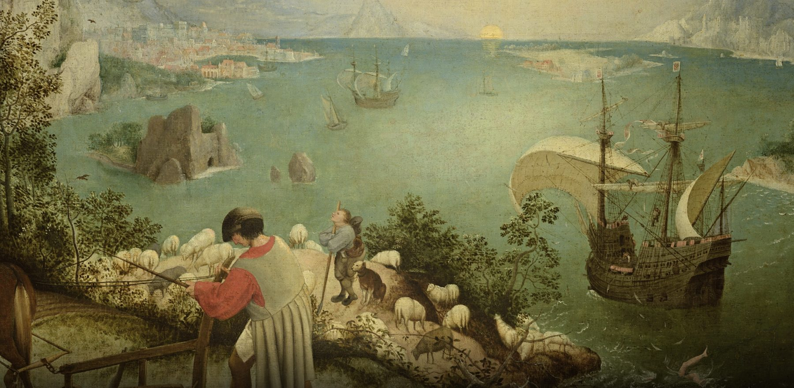
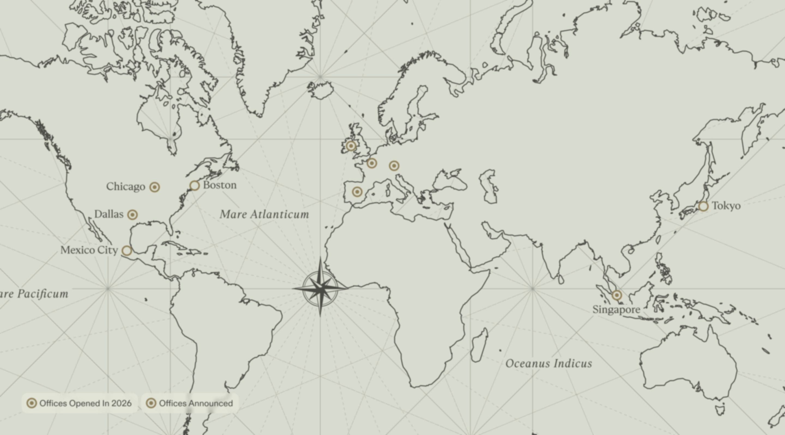

A look back at the year when the future of legal AI became reality—and the people, progress, and possibilities that brought it to life.

A New Standard for Legal Work

n 2026, Harvey expanded what legal AI could do and what legal teams could achieve as a result. For years, lawyers imagined what this technology could do for their work, and most of what they got was small.
2026 changed that. Agents, long-running work, and a connected platform made the imagined version real, for law firms and in-house teams alike.
2026 At A Glance
The Year Legal Work
Went Agentic
From customer adoption to product innovation and global expansion, 2026 marked a defining year for Harvey, raising the bar for what legal AI can achieve.

Harvey more than tripled its customer base in 2026.
Over 3,500 organizations now run on Harvey.
80% of the Am Law 100, and five of the Fortune 10.
Plus more than 1,600 in-house legal teams.

200,000+ professionals, across 85+ countries.
Law firms, in-house teams, and the mid-market, on every continent Harvey serves.
Harvey II
Introduced a more connected platform built around legal matters, with Spaces, Memory, and AI agents that can carry work forward.